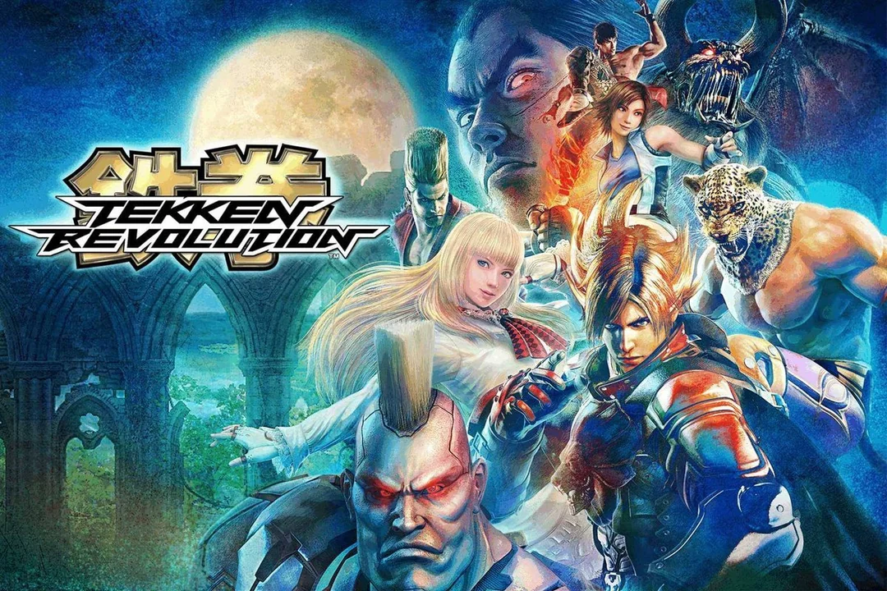

Date: 2013-06-11
Title: Tekken Revolution
Summary: A free-to-play Tekken game featuring new mechanics, stat upgrades, and online-focused gameplay.
Categories: Spin-Off, Online
Type: Game Files
File Size: ~3 GB
Format: Digital
Region: Global
Platform: PlayStation 3
Tekken Revolution is a free-to-play spin-off released exclusively on PlayStation 3. Unlike traditional Tekken games, it introduced a new system where players could upgrade character stats such as power, endurance, and vigor. The game also featured special mechanics like Critical Arts and Special Arts, adding a new layer of strategy to combat. Focused heavily on online multiplayer, Tekken Revolution offered a unique experience but was eventually shut down in 2017. Despite its short life, it remains an interesting experiment in the Tekken series.
Note: Support Original Game By Never Forgetting About it Because It's No Longer Available (used to be available as an exclusive to ps 3 only ) . --Tekken Revolution Can not be Played because servers has closed .